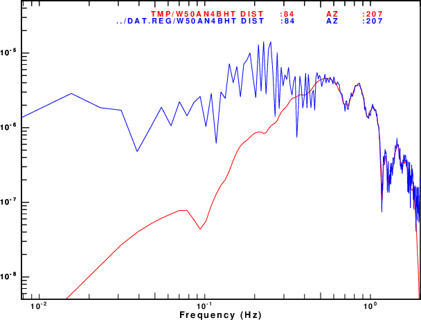

When writing code, testing is important. For moment
tensor inversion this can be accomplished by creating a set of
synthetic seismograms for a given moment tensor and then
determining if the inversion codes yield the known moment
tensor.
For routine moment tensor inversion of earthquake, I prefer using
wvfgrd96 (which is equivalent to wvfmtgrd96 -DC)
because both have an efficient algorithm to handle the time
shifts necessary to align the observed and predicted
waveforms because of location or model error. The deviatoric
and full moment tensor inversion codes wvfmt96 and wvfmtd96
are fast but do not have a good way to handle time shifts. On
the other hand, the wvfmtgrd, wvfmtgrd -DC and wvfmtgrd
-DEV handle the time shifts well by using the same
algorithm used by wvfgrd96. The wvfmtgrd and wvfmtgrd
-DEV run more slowly because the grid search is over 5 and
4 parameters, respectively. For the noise free case, the
examples below show that the wvfmt96 and wvfmtgrd96
give the same results as do the wvfmtd96 and wvfmtgrd96
-DEV. Until someone rewrites the code for wvfmt96
and wvfmtd96 so that time shifts are handled well, I
recommend the use of wvfmtgrd and wvfmtgrd -DEV for
full moment tensor and deviatoric moment tensor inversion.
Finally, if wvfmtd96 or wvfmtgrd96 -DEV are
to be run, try to use a narrower range of depths. In the examples,
the original data are run for depths of 1,2,...,29 km while the
inversions for the synthetics are run for depths of 1, 2, ..., 10
km for speed. In addition the script DOMTGRD has an
initial line NSHFT=40, which means that time shifts of +-
NSHFT samples are to be considered. If the velocity model and the
location are good, then changing this line to NSHFT=10 will
speed the grid search by a factor of four.
This tutorial presents the results of processing moment tensor inversion codes for different synthetic data sets. For each data set, an inversion is performed for the
To repeat the computations download the file MTIVTEST.tgz. Unpack this with the
command
gunzip -c MTIVTEST.tgz | tar xf -
This will create the following directory structure:
MTIVTEST ├── 0XXXREG # these are the prototype directories with scripts are used for all tests ├── 20210813115735 # This is a real data set. The dsta in distribution is used in the synthetic test │ ├── DAT.REG │ │ └── NOUSE │ ├── GRD.REG │ ├── HTML.REG │ ├── MAP.REG │ ├── MLG.REG │ ├── ML.REG │ ├── MTD.REG │ ├── MTGRD.REG │ ├── MTGRD.REG.DC │ ├── MTGRD.REG.DEV │ ├── MT.OTHER │ ├── MT.REG │ ├── NEW2.REG │ └── SYN.REG ├── 20210813115735_0.06 # this has the same structure as above, but the lower frequencies are used for the inversion │ ├── ... ├── bin # executables that are specific to moment tensor inversion
|── MTDC # organization for testing the moment tensor inversion of a double couple source │ ├── DAT.REG # waveforms for inversion │ ├── DAT.SYN # create synthetic data set and place into DAT.REG │ ├── GRD.REG │ ├── HTML.REG │ ├── MLG.REG │ ├── ML.REG │ ├── MTDC │ ├── MTD.REG │ ├── MTGRD.REG │ ├── MTGRD.REG.DC │ ├── MTGRD.REG.DEV │ ├── MT.OTHER │ └── MT.REG ├── MTDEV # organization for testing the moment tensor inversion of a deviatoric source │ ├── ... (see above) ├── MTFULL # organization for testing the moment tensor inversion of a full moment tensor source
├── ... (see above)
├── MTFULL.NOISE # organization for testing the moment tensor inversion of a full moment tensor source with noise
├── ... (see above) ├── DOALL5 (see below)
├── DALL5
├── DOALL
├── DALL
├── src # source code for executables to be placed in the ../bin directory └── TGREEN # precomputed Green's functions at only those distances for the test. └── CUS.REG ├── 0010 ├── 0020 ├── ... ├── 0270 ├── 0280 └── 0290
It is assumed the Computer Programs in Seismology has been
successfully compiled and that the gcc an gfortran
compilers were used. In addition the ImageMagick package
must be installed since this is used to convert the EPS graphcis
to PNG for web display.
After downloading, set the environment to point to the CPS bin
directory and to the CPS source codes. Here are some examples of
how to do this.
LINUX example 1
In ~/.profile
# set PATH so it includes user's PROGRAMS.330/bin if it exists
if [ -d "$HOME/PROGRAMS.330/bin" ] ; then
PATH=":.:$HOME/PROGRAMS.330/bin:$PATH"
fi
In ~/.bashrc
export CPS=${HOME}/PROGRAMS.330
------------------------
LINUX example 2
In ~/.profile
PATH=:.:$HOME/bin:$PATH:$HOME/PROGRAMS.310t/PROGRAMS.330/bin:
In ~/.bashrc
export CPS='/home/rbh/PROGRAMS.310t/PROGRAMS.330/'
------------------------
OSX example
In ~/.profile
OPATH=$PATH
PATH=:.:$HOME/bin:$HOME/PROGRAMS.310t/PROGRAMS.330/bin:$OPATH
export CPS=${HOME}/PROGRAMS.310t/PROGRAMS.330
It is also necessary to point to the Green's functions before
trying to duplicate this tutorial. For this tutorial, the required
subset of Green's functions is provided.
cd MTIVTEST
cd TGREEN
export GREENDIR=`pwd`
Finally compile the executables:
cd MTIVTEST rm -fr bin mkdir bin cd src make all cd ..
To duplicate the comparisons shown in the next section, one would
execute the DOALL or DOALL5 scripts. The first
is used if GMT4 graphics are installed and the second if GMT5 or
later versons of Generic Mapping Tools are installed. The scripts
compile the codes in the src directory and define the
paths to the bin and Green's function
directories. The DOALL5 copies the DALL5 into
each test directory, and then executes it. These codes are
DOALL5:
#!/bin/sh
export PATH=:`pwd`/bin:$PATH #Define PATH to point to the local bin directory
cd src ; make all ;cd .. #Compile the source code
for i in */DAT.SYN #Make the synthetic data set
do
(cd $i ; DOSYN)
done
cd TGREEN #Define the location of the Green;s functions
export GREENDIR=`pwd`
cd ..
for i in 20* MT* #Run each test suite
do
cp DALL5 $i
(cd $i ; DALL5)
done
The DALL5 is run in each test directory:
#!/bin/sh
(cd GRD.REG;DOGRD;DODELAY;DOPLTSAC5;DOCLEANUP)
(cd MT.REG;DOMT ;DODELAY;DOPLTSAC5;DOCLEANUP)
(cd MTD.REG;DOMTD;DODELAY;DOPLTSAC5;DOCLEANUP)
(cd MTGRD.REG.DEV;DOMTGRD;DODELAY;DOPLTSAC5;DOCLEANUP)
(cd MTGRD.REG.DC ;DOMTGRD;DODELAY;DOPLTSAC5;DOCLEANUP)
(cd MTGRD.REG ;DOMTGRD;DODELAY;DOPLTSAC5;DOCLEANUP)
(cd HTML.REG;DOHTML5)
To test the codes and to compare results the analyses were
computed in each of the following directories.The link at the end
of each link points to the documentation for each data set.
The first thing that is required is a station distribution, which is defined here in the file list1 which has the following columns entries: Station_name, Network_name, epicentral distance (km), azimuth from epicenter to the station (degrees), station latitude and station longitude.
BLO NM 392.847 339.053 39.1719 -86.5222 CASEE CO 203.703 118.211 34.993 -82.9317 CPCT ET 58.4465 144.044 35.45 -84.52 GOGA US 303.381 153.962 33.4112 -83.4666
The next thing required is a precomputed set of Green's functions. This is described in the tutorial http://www.eas.slu.edu/eqc/eqc_cps/TUTORIAL/GREEN/index.html. There is a directory that contains the Green's functions and an environment parameter GREENDIR that points tot he directory. If one does a ls ${GREENDIR}, one may see
Models/ CUS.REGThe Models directory will have the velocity model in the model96 format, e.g., CUS.mod. The CUS.REG directory has the Green's functions computed for various source depths and distances. The directory names indicate the source depth. These names are of the form DDDd which represents a depth of DDD.d km.
ls $GREENDIR/CUS.REG 0005/ 0030/ 0060/ 0090/ 0120/ 0150/ 0180/ 0010/ 0040/ 0070/ 0100/ 0130/ 0160/ 0190/ 0020/ 0050/ 0080/ 0110/ 0140/ 0170/ 0200/
The subdirectories contain the Green's functions for a given source depth. Here 0150 represents a source depth of 15.0 km.
Finally each depth directory has Green's functions.
ls $GREENDIR/CUS.REG/0100 009800100.RDD 009800100.RDS 009800100.REX 009800100.RSS 009800100.TDS 009800100.TSS 009800100.ZDD 009800100.ZDS 009800100.ZEX 009800100.ZSS W.CTLgives synthetics at a distance of 0098.0 km for a source depth of 010.0 km. The W.CTL file is uses as an index. A few lines of which are
94 0.25 512 6.75 0 0100 009400100 96 0.25 512 7 0 0100 009600100 98 0.25 512 7.25 0 0100 009800100 100 0.25 512 7.5 0 0100 010000100 105 0.25 512 8.125 0 0100 010500100
which gives the distance, sample interval, number of data points the t0 and vred to compute the first time sample, the depth directory and the corresponding Green's function prototype. The shell script DOSTA below will search for the Green's function distance closed to the observed data. Thus if the epicentral distance is 97.5 km, the script will select 009800100 and thus the Green's functions listed above.
There are two steps: make the synthetics for each station in list1
and then, optionally, add noise. Within each source inversion
directory, there is a DAT.SYN directory with a script that reads
the file list1. Although the scripts start with the
initial full moment tensor, some of the scripts will create
synthetics for the full moment tensor, for the deviatoric
component of the moment tensor and for the major double couple
component of the moment tensor.
This shell script to make synthetics for the full moment tensor is as follows:
#!/bin/sh ##### # make synthetics for a given moment tensor and mw ##### ##### # define the origin time # this is so that the observed and synthetics can be plotted on the same absolute time scale ##### NZYEAR=2021 NZJDAY=225 NZMON=08 NZDAY=13 NZHOUR=11 NZMIN=57 NZSEC=35 NZMSEC=000 EVLA=35.877 EVLO=-84.898 MW=4.22 MXX=-1.01E+22 MXY=+0.03E+22 MXZ=0.88E+22 MYY=-1.06E+22 MYZ=0.28E+22 MZZ=-2.19E+22 M0=2.69E+22 HS=0010 # This is important since it defines the source depth of 1.0km for the synthetics. This naming matches the
# directory structure in ${GREENDIR}/CUS.REG/ mtinfo -XX $MXX -XY $MXY -XZ $MXZ -YY $MYY -YZ $MYZ -ZZ $MZZ -a > mtinfo.txt GREEN=${GREENDIR}/CUS.REG # Change this to use Greens functions if another model is used. MOMENT=`echo $MXX $MXY $MXZ $MYY $MYZ $MZZ| awk '{print sqrt(0.5*($1*$1 + 2*$2*$2 + 2*$3*$3 + $4*$4 + 2*$5*$5 + $6*$6))}' `
echo $MOMENT
fmplot -FMPLMN -P -XX $MXX -XY $MXY -XZ $MXZ -YY $MYY -YZ $MYZ -ZZ $MZZ ##### # begin the computation of synthetics ##### while read STA NET DIST AZ STLA STLO do echo $STA $NET $DIST $AZ ##### # search over source depth These depths are the subdirectory # names in the Green's Function Directory ##### cat > awkprog << FOE # This works under gawk - on Solaris try nawk BEGIN { MDIF = 10000.0 } {DIF = $DIST - \$1 ; if( DIF < 0 ) DIF = - DIF ; if(DIF < MDIF) { MDIF = DIF ; Dfile = \$7 ; Rate = \$2 ; Dist = \$1 } } END { print Dfile , Rate, Dist } FOE cat ${GREEN}/${HS}/W.CTL | \ awk -f awkprog > j DFILE=`awk '{print $1}' < j ` PROTO=${GREEN}/${HS}/${DFILE} echo $STA $NET $DIST $AZ $PROTO gsac << EOF mt to ZRT MXX $MXX MXY $MXY MXZ $MXZ MYY $MYY MYZ $MYZ MZZ $MZZ AZ $AZ FILE ${PROTO} w rh T.? ch NZYEAR $NZYEAR NZJDAY $NZJDAY NZHOUR $NZHOUR NZMIN $NZMIN NZSEC $NZSEC NZMSEC $NZMSEC ch ocal $NZYEAR $NZMON $NZDAY $NZHOUR $NZMIN $NZSEC $NZMSEC ch KSTNM $STA KNETWK $NET STLA $STLA STLO $STLO ch lcalda false ch evla ${EVLA} evlo ${EVLO} wh quit EOF mv T.Z ../DAT.REG/${STA}${NET}BHZ mv T.R ../DAT.REG/${STA}${NET}BHR mv T.T ../DAT.REG/${STA}${NET}BHT done < list1 rm -f j awkprog ##### # create the true solution for the comparison panel ##### mtinfo -xx $MXX -yy $MYY -zz $MZZ -xy $MXY -xz $MXZ -yz $MYZ > mtinfo.out cp mt.msg ../MT.OTHER/true
The script is commented. The upper part defines the origin time
and location of the event as well as its moment tensor values. The
source depth is given as 0010 to agree with the
organization of the Green's function directory. If the Green's
functions were ground velocity in cm/s (default when using KM and
GM/CM^3 for model units), then the output here will be ground
velocity in m/s.The gsac mt command make
the synthetics for the given moment tensor and azimuth using the
Green's functions and also ensures the final units.s
The resulting synthetics can be compared to observed data since
they have the same start and end times, distances and azimuths.
The script for the deviatoric moment tensor synthetics has these
lines after the moment tensor is defined:
#####
# make deviatoric
#####
MI=`echo $MXX $MYY $MZZ | awk '{printf "%11.3e", ($1+$2+$3)/3.}' `
MXX=`echo $MXX $MI | awk '{printf "%11.3e", $1 - $2}' `
MYY=`echo $MYY $MI | awk '{printf "%11.3e", $1 - $2}' `
MZZ=`echo $MZZ $MI | awk '{printf "%11.3e", $1 - $2}' `
The deviatoric moment tensor is formed by subtracting the
isotropic component from the moment tensor. Thus if the
moment tensor is changed, then this part of the code will give the
correct deviatoric moment tensor.
To make synthetics for the double couple source, the strike, dip
and rake angles can be specified with the moment magnitude.
However, I chose to manually run mtinfo to determine the
moment tensor corresponding to the major double couple. This was
then manually inserted into the DOSYN script in MTDC/DAT.SYN. Thus
that script has
#These are the from the major double couple of the original
#moment tensor which is obtained from mtinfo
MXX=0.6160382E+22
MXY=0.2148202E+22
MXZ=0.1017061E+23
MYY=0.7464936E+21
MYZ=0.3297876E+22
MZZ=-0.6906876E+22
This script DOSYN script in MTFULL.NOISE/DAT.SYN is given here.
This script makes use fo the program sacnoise which was
part of the tutorial Moment
Tensor Sensitivity to Noise. This code is in the distributed
in the src directory of the MTIVTEST.tgz .
!/bin/bash
#####
# make synthetics for a given moment tensor and mw
#####
#####
# define the origin time and source parameters. These are for the full moment tensor
#####
NZYEAR=2021
NZJDAY=225
NZMON=08
NZDAY=13
NZHOUR=11
NZMIN=57
NZSEC=35
NZMSEC=000
MW=4.22
MXX=-1.01E+22
MXY=+0.03E+22
MXZ=0.88E+22
MYY=-1.06E+22
MYZ=0.28E+22
MZZ=-2.19E+22
M0=2.69E+22
HS=0010
mtinfo -XX $MXX -XY $MXY -XZ $MXZ -YY $MYY -YZ $MYZ -ZZ $MZZ -a > mtinfo.txt
GREEN=${GREENDIR}/CUS.REG
MOMENT=`echo $MXX $MXY $MXZ $MYY $MYZ $MZZ| awk '{print sqrt(0.5*($1*$1 + 2*$2*$2 + 2*$3*$3 + $4*$4 + 2*$5*$5 + $6*$6))}' `
echo $Moment
fmplot -FMPLMN -P -XX $MXX -XY $MXY -XZ $MXZ -YY $MYY -YZ $MYZ -ZZ $MZZ
#####
# begin the computation of synthetics
#####
while read STA NET DIST AZ STLA STLO
do
echo $STA $NET $DIST $AZ
#####
# search over source depth These depths are the subdirectory
# names in the Green's Function Directory
#####
cat > awkprog << FOE
# This works under gawk - on Solaris try nawk
BEGIN { MDIF = 10000.0 }
{DIF = $DIST - \$1 ;
if( DIF < 0 ) DIF = - DIF ;
if(DIF < MDIF) { MDIF = DIF ; Dfile = \$7 ; Rate = \$2 ; Dist = \$1 }
}
END { print Dfile , Rate, Dist }
FOE
cat ${GREEN}/${HS}/W.CTL | \
awk -f awkprog > j
DFILE=`awk '{print $1}' < j `
PROTO=${GREEN}/${HS}/${DFILE}
echo $STA $NET $DIST $AZ $PROTO
gsac << EOF
mt to ZRT MXX $MXX MXY $MXY MXZ $MXZ MYY $MYY MYZ $MYZ MZZ $MZZ AZ $AZ FILE ${PROTO}
w
rh T.?
ch NZYEAR $NZYEAR NZJDAY $NZJDAY NZHOUR $NZHOUR NZMIN $NZMIN NZSEC $NZSEC NZMSEC $NZMSEC
ch ocal $NZYEAR $NZMON $NZDAY $NZHOUR $NZMIN $NZSEC $NZMSEC
ch KSTNM $STA KNETWK $NET STLA $STLA STLO $STLO
ch lcalda false
ch evla 35.877 evlo -84.898
synchronize o
wh
cut a -60 a 250
r T.?
synchronize o
lh kcmpnm kstnm
w
w append .orig
quit
EOF
echo ========= FOR LOOP ===========
for i in T.Z T.R T.T
do
RVAL=$RANDOM
echo ======================= $i =======================
NPTS=`saclhdr -NPTS $i`
DELTA=`saclhdr -DELTA $i`
PVAL=0.5
NPTS=`saclhdr -NPTS ${i}`
A=`saclhdr -A ${i}`
O=`saclhdr -O ${i}`
DELTA=`saclhdr -DELTA ${i}`
EVLA=`saclhdr -EVLA ${i}`
EVLO=`saclhdr -EVLO ${i}`
B=`saclhdr -B ${i}`
E=`saclhdr -E ${i}`
KCMPNM=`saclhdr -KCMPNM ${i}`
RVAL=${RANDOM}
sacnoise -dt ${DELTA} -s ${RVAL} -p ${PVAL} -npts ${NPTS}
#####
# To get noise before the synthetic
# for the synthetic
# set the O 60 seconds into the record
# then set the time stamp
# then synchronize O
# then set the A time for the P first arrival
#####
gsac << EOF
r O.sac
ch lcalda false
w
r
ch NZYEAR $NZYEAR NZJDAY $NZJDAY NZHOUR $NZHOUR NZMIN $NZMIN NZSEC $NZSEC NZMSEC $NZMSEC
shift fixed -120
synchronize o
ch a $A
ch KSTNM ${STA}
ch KNETWK ${NET}
ch KCMPNM ${KCMPNM}
ch EVLA $EVLA EVLO $EVLO STLA $STLA STLO $STLO
transfer from none to none freqlimits 0.005 0.01 10 20
#convert to velocity
int
w noise
r $i noise
addf master 1
w ${i} none
rh ${i}
ch KCMPNM ${KCMPNM}
ch o gmt ${NZYEAR} ${NZJDAY} ${NZHOUR} ${NZMIN} ${NZSEC} ${NZMSEC}
synchronize o
wh
q
EOF
done
cp T.Z ../DAT.REG/${STA}${NET}BHZ
cp T.R ../DAT.REG/${STA}${NET}BHR
cp T.T ../DAT.REG/${STA}${NET}BHT
done < list1
rm -f j awkprog
#####
# create the true solution for the comparison panel
#####
mtinfo -xx $MXX -yy $MYY -zz $MZZ -xy $MXY -xz $MXZ -yz $MYZ > mtinfo.out
cp mt.msg ../MT.OTHER/true
The PVAL=0.5 sets the noise level. 0.0 is for the NLNM and 1.0 is for the NHNM. Most of the script is dedicated to making the noise start and end at the same time as the noise-free time series, so that they can be summed with the result having the correct headers.
The result of this simulation will be similar to the next
figure. Note that your trace will not look exactly the same since
statement
RVAL=${RANDOM}
causes a different random number seed each time it executed.
|
Time series: Noise free (red) and with noise (blue) |

Fourier velocity spectra: Noise free (red) and with
noise (blue)
|